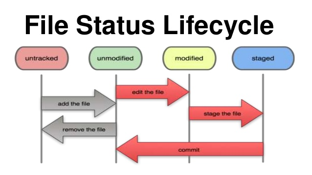

$ git config global user.name "запис нікнейму" /* зберігає налаштування конкретного користувача
$ git config global user.email "запис почти" /* global дані будуть використовуватись для всіх проектів,
якщо необхідно для іншого вказуємо нові дані без global в каталозі цього проекту
$ git config /* перегляд і встановлення параметри, які контролюють роботу git
$ git config --list /* перегляд використовуваних налаштувань
$ git help commit /* виклик допомоги по команді commit
$ cd e:/git /* вибір папки
$ git init /* у вибрану каталозі створити новий підкаталог з іменем .git, який вміщує
всі необхідні файли репозиторія (проект ще не знаходиться під контролем версій)
Ex.: Initialized empty Git repository in E:/git/.git/
ESC, ввести :wq і нажати Enter /* вихід з текстового повідомлення "Please enter...blablabla"

$ git status /* для перевірки в якому стані знаходяться файли
$ git add . /* додати всі файли під версійний контроль для подальшого відслідковування
$ git add index.html /* додати конкретний файл під версійний контроль для подальшого відслідковування
$ git commit -m /* фіксуємо зміни в гілку master
$ git commit -m "first commit" /* фіксуємо зміни в гілку master з коментарем довільним для власного контролю
$ git commit -a -m 'added new' /* автоматично фіксуємо всі зміни відслідковуваних файлів на момент комміта,
проте за рахунок -а не потрібно виконувати команду add перед коммітом
$ git push origin master /* відправка файлу на головний репозиторій
$ git clone https://github.com/nromanen/Ch-051 .
$ git remote /* для перегляду списку імен всіх існуючих віддалених реозиторіїв
$ git remote show origin
$ git remote -v /* для перегляду до якого URL відповідає скороченне імя в Git
$ git remote add origin https://github.com/NadiaOleksiuk/challenge.git /* додавання віддаленого репозиторію
під вибраним скороченним ім"ям (можна використовувати тепер ім"я origin зімасть довгого URL)
$ git push -u origin master /* для кожної гілки додано посилання верх на відслідковування ****** ??? O_o
$ git checkout -b new_f /* створити нову гілку new_f і відразу ж на неї перейти -b
$ git branch new_f2 /* створити гілку, але без переходу на неї
$ git checkout new_f2 /* перехід з гілки з назвою new_f на new_f2
$ git branch /* подивитись, які є гілки
$ git branch -v /* щоб подивитись більш детальну інформації і коміти, які були створені